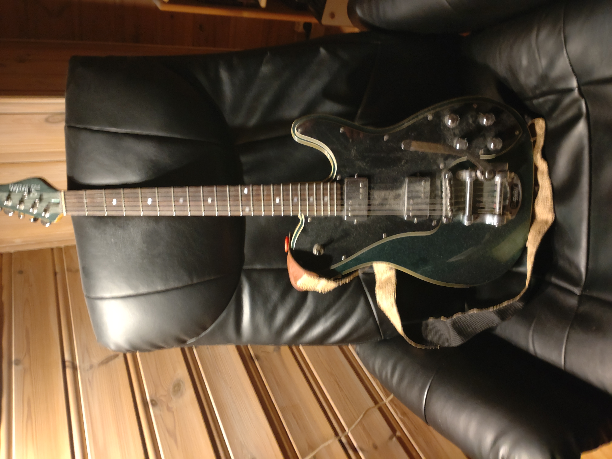
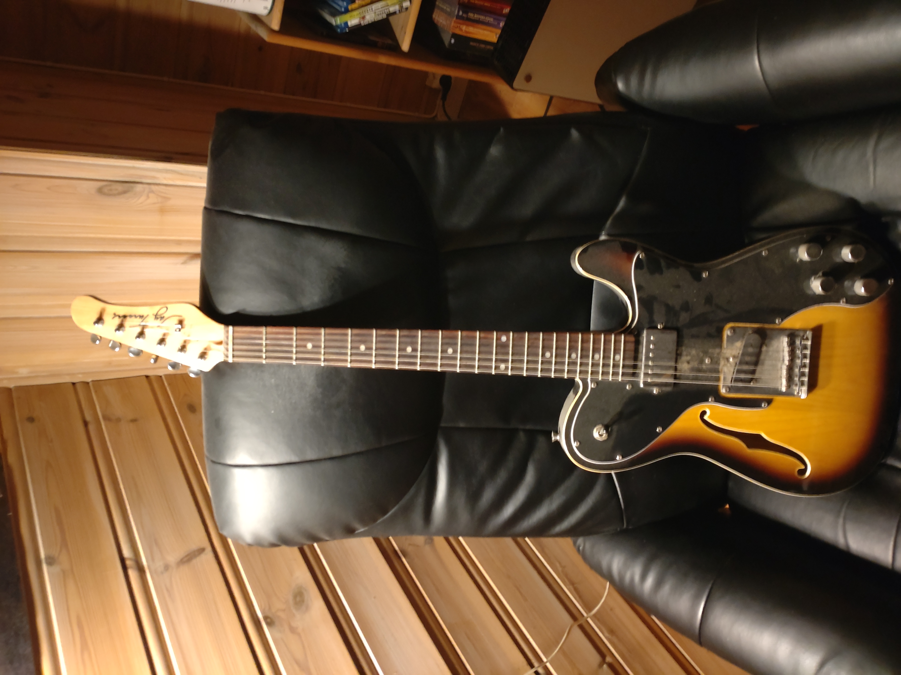
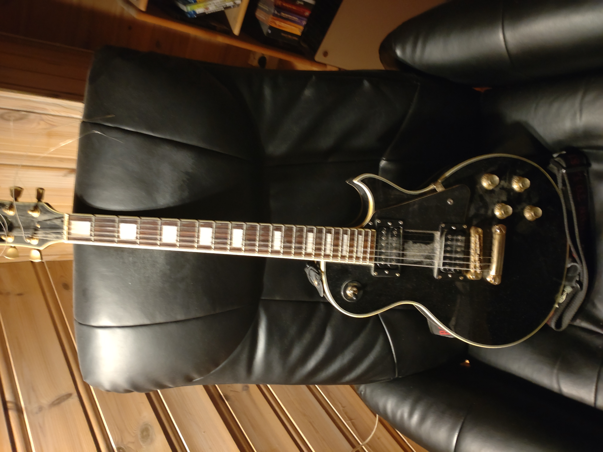

Bilder og beskrivelser av brukte gitarer jeg ikke selger.
Kontakt: kimdino at x eller x91
Alle gitarene er satt opp for .011 strenger
Merk: jeg sender ikke pr post!
Eller gå tilbake.
----------------------------------------------

Schecter Fastback PT m/Bigsby
Solidbody gitar fra retroserien til Schecter. To "Diamond Rock"
humbuckere med individuell splitt til singlecoils i tonepottene (push/pull),
slik at man får flere lyder. Veldig behagelig å spille på,
men jeg tror det er noe galt med elektronikken. Inkluderer
gitarkasse, straplocks fra Grolsch og reim.
----------------------------------------------

Jay Turser tele-lignende semiakustisk (flattop, thinline)
Aner ikke hvor den kommer fra, muligens Kina. Lyden er
sånn passe, men den er ikke særlig
god å spille på: den holder ikke på stemminga, intonasjonen er
dårlig og vanskelig å fikse, den er vond å stemme. Mye av dette
kan kanskje fikses av en proff. Uten tilbehør.
----------------------------------------------

Jack & Danny brothers Deluxe LP
Solidbody elgitar fra Kina, med to Seymour Duncan '59 humbuckere. Fin lyd og god å
spille på, men noen bånd er litt døde. Uten tilbehør.
----------------------------------------------